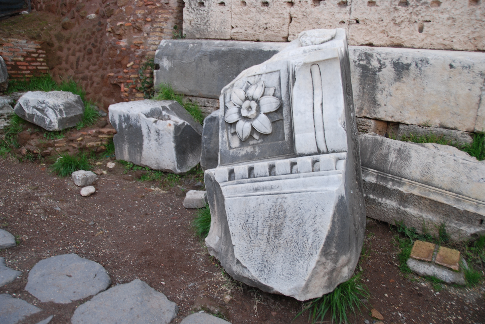
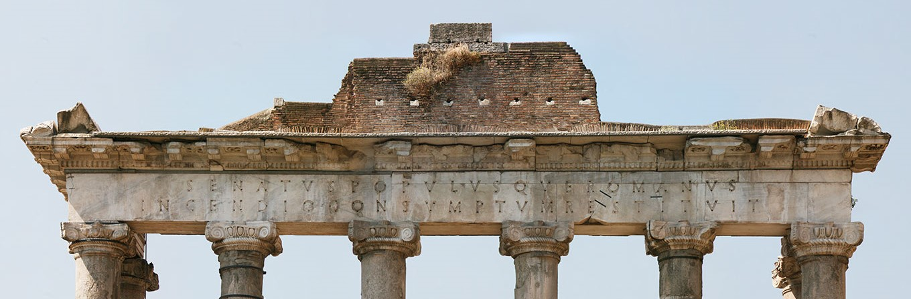
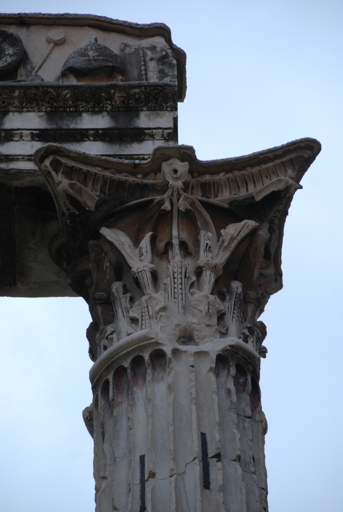

One of the oldest temples in the Forum is that of Saturn. Saturn and Cybele were central to the hierarchy of gods and goddess of Roman religion. Cybele is a significant figure in the Greek tradition and could be seen as an important tradition to the Roman history. History presents Saturn and Cybele as siblings, as partners and as mother and child relations in various times of the mythological writings.
At the side of temple of Saturn is a fallen part of the cornice deal of the temple. The temple housed the public treasury and the orders of the senate. The temple of Saturn may have borne the name of its then ruler T. Larcius.


The Temple of Vespasian is placed on a significant site along the western end of the Roman Forum at the beginning of the ascent of the the Clivus Capitolinus. Described as “one of the highest achievements of Imperial Rome,” the Temple of Vespasian and Titus along the southwest side of the Roman Forum represents a level of grace and refinement that arguably exceeded any other period of ancient Roman architecture.
The construction of the temple near the end of the first century CE represents a time when the Roman Empire was at its limit, paralleled by the belief in the divine nature of the emperors as shown by posthumous deification. The eventual onset of Christianity and decline of Imperial Rome into the Middle Ages saw the abandonment and slow dismantling of the temple to its present state of only three columns. Despite a renewed interest in the characteristics of the temple during the Renaissance, it was not until the 19th century that the excavation of the temple allowed for its restoration and preservation. Although modern archaeology has allowed for a widely accepted reconstruction of the Temple as it would have looked at the height of the Roman Empire, many details concerning the design of the temple remain unknown and can only be reconstructed with educated hypotheses.

Les of the honorific arches built in the Forum, it was erected to celebrate emperor Septimius Severus' victories in the Eastern provinces Its dedication is inscribed along the two panels above the arch. The via sacra runs through the central arch leading up to the Capitoline; a set of stairs gave passage through the lateral arches.
Rich figural reliefs decorate the facades: barbarian prisoners escorted by Roman soldiers; Mars, on the keystone facing the Capitoline; winged victories holding trophies in the central archway. Above the side arches episodes of the emperor's two military campaigns. Historic sources tell us that at the top of the monument were statues of Septimius Severus and his two sons, Caracalla and Geta on a four-hourse chariot led by soldiers.